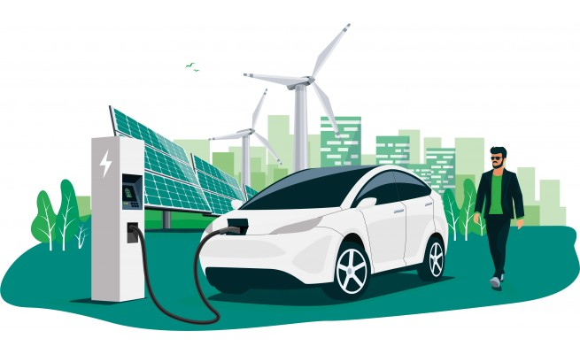

Infrastructures de Recharge pour Véhicules Électriques
Cette application permet d'explorer les données de la base nationale des bornes de recharge pour véhicules électriques (IRVE). Visualisez les points de charge dans un tableau et sur une carte, consultez des statistiques par département et exploitez des prédictions issues de l'intelligence artificielle.
